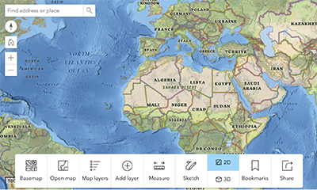

Launch the map in a new window or tab in your browser by pressing the button below. The image on the right shows the startup appearance of the mapping tool.

You can also provide students with the URL: https://esriurl.com/mapmaker
Launch the map. Press Open Map and search for: